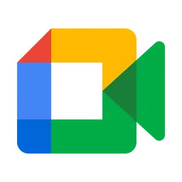

The final
meeting platform.
Create tasks and docs with AI and your team in real time. Every call ends with progress.
Meeting spaces
Every meeting, recording, and action in one place
Transcriber organises meetings into spaces with recordings, knowledge, and follow-ups so you and your Al teammate can act without delay.
Replaces : Zoom Google meet Granola
AI Teammate
Where business knowledge comes alive
An AI teammate that carries context from every meeting and page, making teamwork career and next steps effortless.
- Invisible until needed
- Answers questions in meetings and workspaces
- Remembers past conversations and context
Knowledge
Where context and meetings connect
Transcriber connects company knowledge and past meetings, so your team always has clear answers with the right context.
- Combines knowledge and meetings for answers
- Delivers context so decisions are clear
- Connects Google Drive, Notion, and more
Meeting spaces
Every meeting, recording, and action in one place
Transcriber organises meetings into spaces with recordings, knowledge, and follow-ups so you and your Al teammate can act without delay.
80+ integrations
Connect your agent to powerful external tools
FAQs
If you can't find the answer to your question below, email us at support@transcriber.co